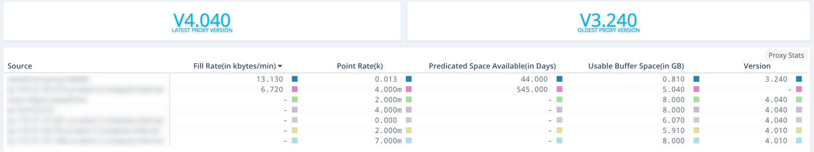
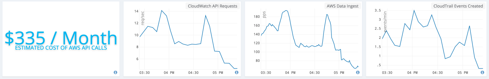

Wavefront proxies emit Wavefront-specific metrics that you can use to check if your Wavefront instance is behaving as expected. Wavefront internal metrics are classified into the categories:
- ~agent: Metric rate received and sent from the proxy, blocked and rejected metric rates, buffer metrics, and JVM stats of the proxy. Also includes counts of metrics affected by the proxy preprocessor.
- ~collector: Metrics that monitor the data processed at the collector gateway to the Wavefront instance.
- ~metric: Counter and gauge metrics computed by the proxy. These give you the total unique sources and metrics. You can compute the rate of metric creation from each source.
- ~externalservices: Metric rates, API requests, and events from AWS CloudWatch, CloudTrail, and EC2 services.
Wavefront has a Wavefront Internal Metrics dashboard that displays many of these internal metrics and gives you a quick health check of your Wavefront server.
Overall Data Rate
This section shows the overall point rate being processed by the Wavefront servers.

These charts use the following metrics:
- Data Ingestion Rate: reports ~collector.points.reported, ~externalservices.cloudwatch.points, and ~externalservices.ec2.points, counter metrics the per second rate at which new data points are being ingested into Wavefront. The AWS metrics are broken out in AWS Integration.
- Data Scan Rate: reports ~query.summaries_scanned, the per second rate at which data points are being queried out of Wavefront through dashboards, alerts, custom charts, or API calls.
Proxy Health
This section is the most used section of the dashboard. The most commonly used internal metrics are the ~agent.points counter metrics that measure the data traffic on each port of the proxy. These metrics show the rate at which points are being received at each proxy, the rate at which points are being sent from the proxy to the Wavefront server as well as if there are any queued or blocked points.
-
~agent.points.*.received: a counter showing the total points being received at the proxy. We can look at this as a per second rate. If you want to look at the overall rate of points received across all the ports you can sum up these series and look at the aggregate rate for a proxy. You can also look at the over all rate across all proxies by summing this up further.
- ~agent.points.*.queued: a counter showing the number of points being queued to be sent to Wavefront from the proxy. We can look at this as a per second rate. Queueing happens usually for two reasons.
- The proxy has reached the threshold of number of points it can process every batch. The maximum points a proxy can process and push to Wavefront is determined by two factors:
- number of cores on the machine on which the proxy is running
- pushFlushMaxPoints - the batch size the proxy sends every second. This value is configurable.
The maximum points a proxy can push (without queueing) each second is (number of cores * pushFlushMaxPoints). The default setting for pushFlushMaxPoints is 40,000. If you are running the proxy on a 4 core machine, the maximum points the proxy can send is 160k per second.
- The total point rate being collected at Wavefront has reached the maximum allowed capacity. The Wavefront server is pushing back causing data to buffer at the proxy which in turn causes the proxy to queue points.
- The proxy has reached the threshold of number of points it can process every batch. The maximum points a proxy can process and push to Wavefront is determined by two factors:
- ~agent.buffer.task-count: a gauge showing the amount of data that the proxy currently has queued.
- ~agent.buffer.points-count: a gauge showing the number of points currently in the queue. This metric was introduced in version 4.6 of the proxy.
- ~agent.points.*.blocked: a counter for the points being blocked at the proxy. We can look at this as a per second rate. If it is above 0 you can look at the charts in the Proxy Troubleshooting section of this dashboard to determine if the metrics contain invalid characters, bad timestamps, or are failing configureable regular expressions. We recommend that you look in
/var/log/wavefront/wavefront-blocked-points.logfile to see a sample of the blocked points.

These ~agent metrics describe behavior at the Wavefront proxy:
- ~agent.buffer.fill-rate: rate at which the proxy buffer is filling up in bytes/min.
- ~agent.points.*.received: the rate that points are being received at the proxy.
- ~agent.buffer.bytes-left: The available space (in bytes) on the proxy.
- ~agent.build.version: The current version number of the proxy.
They are displayed in a tabular chart:

Proxy Troubleshooting
This section covers the second level metrics that give you insight into questions such as: why some points are being blocked, file descriptor usage on the proxy JVM, and how long does it take for points to be pushed from the proxy to Wavefront. The metrics used in this section are:
- ~agent.limiter.permits-denied: A counter of how many points have been queued due to local proxy settings in wavefront.conf, i.e. the proxy rate limiting itself, not the Wavefront service pushing back.
- ~agent.point.badchars: Count of points blocked due to illegal character
- ~agent.point.badtime: Count of points blocked due to the timestamp (ex: older than 1 year).
- ~agent.validationRegex.*.points-rejected: The points rejected based on the whitelist/blacklist validation applied (using regex) at the Wavefront proxy.
- ~agent.jvm.fd_usage: % of file descriptors in use per proxy. If this reaches close to 100% the proxy may have you should increase the uLimit on your system.
- ~agent.jvm.garbage-collectors.*.time: GC activity on the proxy JVM. Anything larger than 200ms here is probably a GC issue, anything near 1k ms indicates continuous full GCs in the proxy.
- ~agent.jvm.memory.heapMax/heapUsed: Memory usage by the proxy process.
- ~agent.push.*.duration.duration.median: Duration taken by points pushed from the proxy to reach to Wavefront. Can help identify network latency issues. You can also graph other percentiles.
- ~agent.points.*.received.lag.p99: p99 difference between the timestamp on a point and the time that the proxy received it. High numbers may indicate back-filling old data, or clock drift in sending systems.
- ~agent.buffer.queue-time.*: Tracks latency introduced by queueing.
For example, this row from that section shows latency metrics using ~agent.push.*.duration.duration.median:

Wavefront Stats
These charts track the number of Wavefront users during various time windows, number of dashboards and alerts, and information about the types of alerts.
- ~wavefront.* : A set of gauges tracking many stats about your use of Wavefront.

AWS Integration
If you have AWS cloud integrations enabled and are ingesting AWS CloudWatch, CloudTrail, and EC2 metrics into Wavefront, this section monitors the cost of CloudWatch requests, API requests, the point rate, and events coming in from your integrations.

These are all counter metrics:
- ~externalservices.cloudwatch.api-requests
- ~externalservices.cloudwatch.points
- ~externalservices.ec2.points
- ~externalservices.cloudtrail.events
Ingest Rate by Source
This section gives you insight into the shape of your data. It shows the total number of sources reporting. It also monitors the rate of metrics creation and breaks it down by each source.

The metrics used in this section are:
- ~metric.counter: Count of the total number of metrics being collected. It can be broken down by the sources sending the metrics.